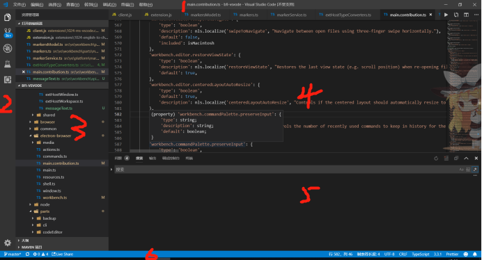
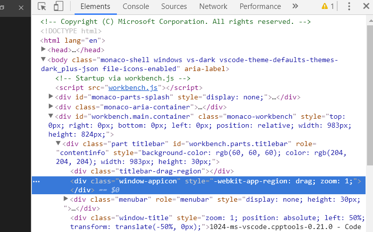
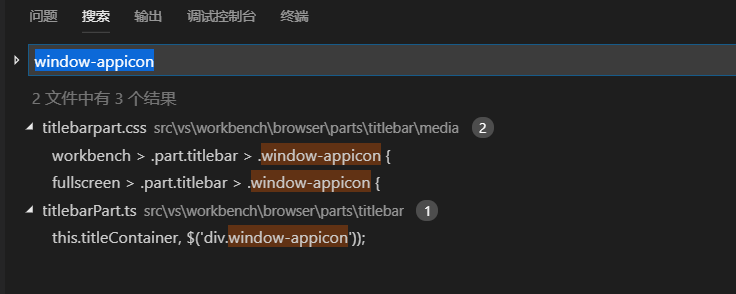
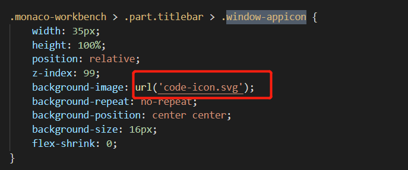
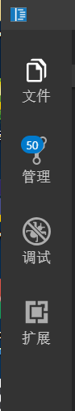

<!DOCTYPE html>
<html lang="zh-Hans">
<head><meta name="generator" content="Hexo 3.8.0">

    <!--[if lt IE 9]>
        <style>body {display: none; background: none !important} </style>
        <meta http-equiv="Refresh" Content="0; url=//outdatedbrowser.com/" />
    <![endif]-->

<meta charset="utf-8">
<meta http-equiv="X-UA-Compatible" content="IE=edge, chrome=1">
<meta name="viewport" content="width=device-width, initial-scale=1, maximum-scale=1, user-scalable=no">
<meta name="format-detection" content="telephone=no">
<meta name="author" content="Zhou Hang">


<meta name="description" content="本文给大家介绍vscode的界面的自定义修改首先，先看vsocde界面如图1：  界面大致可以分为六部分：1.标题栏titlebar 包含其中左边的（包括文件~帮助）为菜单栏menubar2.活动栏activitybar3.侧边栏sidebar4.编辑器editor5.终端及输出等panel6.状态栏statusbar通过分类我们已经清楚了每个部分，接下来我们就动手尝试吧！">
<meta name="keywords" content="VsCode">
<meta property="og:type" content="article">
<meta property="og:title" content="vscode二次开发界面篇">
<meta property="og:url" content="http://zhouhangzooo.github.io/2019/05/13/vscode二次开发界面篇/index.html">
<meta property="og:site_name" content="Blog">
<meta property="og:description" content="本文给大家介绍vscode的界面的自定义修改首先，先看vsocde界面如图1：  界面大致可以分为六部分：1.标题栏titlebar 包含其中左边的（包括文件~帮助）为菜单栏menubar2.活动栏activitybar3.侧边栏sidebar4.编辑器editor5.终端及输出等panel6.状态栏statusbar通过分类我们已经清楚了每个部分，接下来我们就动手尝试吧！">
<meta property="og:locale" content="zh-Hans">
<meta property="og:image" content="http://zhouhangzooo.github.io/2019/05/13/vscode二次开发界面篇/vscode1.png">
<meta property="og:image" content="http://zhouhangzooo.github.io/2019/05/13/vscode二次开发界面篇/vscode2.png">
<meta property="og:image" content="http://zhouhangzooo.github.io/2019/05/13/vscode二次开发界面篇/vscode3.png">
<meta property="og:image" content="http://zhouhangzooo.github.io/2019/05/13/vscode二次开发界面篇/vscode4.jpg">
<meta property="og:image" content="http://zhouhangzooo.github.io/2019/05/13/vscode二次开发界面篇/vscode5.png">
<meta property="og:updated_time" content="2019-05-19T06:57:10.270Z">
<meta name="twitter:card" content="summary">
<meta name="twitter:title" content="vscode二次开发界面篇">
<meta name="twitter:description" content="本文给大家介绍vscode的界面的自定义修改首先，先看vsocde界面如图1：  界面大致可以分为六部分：1.标题栏titlebar 包含其中左边的（包括文件~帮助）为菜单栏menubar2.活动栏activitybar3.侧边栏sidebar4.编辑器editor5.终端及输出等panel6.状态栏statusbar通过分类我们已经清楚了每个部分，接下来我们就动手尝试吧！">
<meta name="twitter:image" content="http://zhouhangzooo.github.io/2019/05/13/vscode二次开发界面篇/vscode1.png">

<link rel="apple-touch-icon" href="/apple-touch-icon.png">


    <link rel="alternate" href="/atom.xml" title="Blog" type="application/atom+xml">


    <link rel="shortcut icon" href="/favicon.png">


    <link href="//cdn.bootcss.com/fancybox/2.1.5/jquery.fancybox.min.css" rel="stylesheet">


    <script src="//cdn.bootcss.com/pace/1.0.2/pace.min.js"></script>
    <link href="//cdn.bootcss.com/pace/1.0.2/themes/blue/pace-theme-minimal.css" rel="stylesheet">


<link rel="stylesheet" href="/css/style.css">


<link href="//cdn.bootcss.com/font-awesome/4.6.3/css/font-awesome.min.css" rel="stylesheet">


<title>vscode二次开发界面篇 | Blog</title>

<script src="//cdn.bootcss.com/jquery/2.2.4/jquery.min.js"></script>
<script src="//cdn.bootcss.com/clipboard.js/1.5.10/clipboard.min.js"></script>

<script>
    var yiliaConfig = {
        fancybox: true,
        animate: false,
        isHome: false,
        isPost: true,
        isArchive: false,
        isTag: false,
        isCategory: false,
        fancybox_js: "//cdn.bootcss.com/fancybox/2.1.5/jquery.fancybox.min.js",
        scrollreveal: "//cdn.bootcss.com/scrollReveal.js/3.1.4/scrollreveal.min.js",
        search: true
    }
</script>


    <script> yiliaConfig.jquery_ui = [false]; </script>


    <script> yiliaConfig.rootUrl = "\/";</script>


    <script>
        var _hmt = _hmt || [];
        (function() {
            var hm = document.createElement("script");
            hm.src = "//hm.baidu.com/hm.js?bf5814fc0288ae75df454b2a73ce9670";
            var s = document.getElementsByTagName("script")[0]; 
            s.parentNode.insertBefore(hm, s);
        })();
    </script>


</head></html>
<body>
  <div id="container">
    <div class="left-col">
    <div class="overlay"></div>
<div class="intrude-less">
    <header id="header" class="inner">
        <a href="/" class="profilepic">
            
        </a>
        <hgroup>
          <h1 class="header-author"><a href="/">Zhou Hang</a></h1>
        </hgroup>

        

        
            <form id="search-form">
            <input type="text" id="local-search-input" name="q" placeholder="search..." class="search form-control" autocomplete="off" autocorrect="off" searchonload="false">
            <i class="fa fa-times" onclick="resetSearch()"></i>
            </form>
            <div id="local-search-result"></div>
            <p class="no-result">No results found <i class="fa fa-spinner fa-pulse"></i></p>
        


        
            <div id="switch-btn" class="switch-btn">
                <div class="icon">
                    <div class="icon-ctn">
                        <div class="icon-wrap icon-house" data-idx="0">
                            <div class="birdhouse"></div>
                            <div class="birdhouse_holes"></div>
                        </div>
                        <div class="icon-wrap icon-ribbon hide" data-idx="1">
                            <div class="ribbon"></div>
                        </div>
                        
                        <div class="icon-wrap icon-link hide" data-idx="2">
                            <div class="loopback_l"></div>
                            <div class="loopback_r"></div>
                        </div>
                        
                        
                        <div class="icon-wrap icon-me hide" data-idx="3">
                            <div class="user"></div>
                            <div class="shoulder"></div>
                        </div>
                        
                    </div>
                    
                </div>
                <div class="tips-box hide">
                    <div class="tips-arrow"></div>
                    <ul class="tips-inner">
                        <li>菜单</li>
                        <li>标签</li>
                        
                        <li>友情链接</li>
                        
                        
                        <li>关于我</li>
                        
                    </ul>
                </div>
            </div>
        

        <div id="switch-area" class="switch-area">
            <div class="switch-wrap">
                <section class="switch-part switch-part1">
                    <nav class="header-menu">
                        <ul>
                        
                            <li><a href="/">主页</a></li>
                        
                            <li><a href="/archives/">所有文章</a></li>
                        
                            <li><a href="/tags/">标签云</a></li>
                        
                            <li><a href="/about/">关于我</a></li>
                        
                        </ul>
                    </nav>
                    <nav class="header-nav">
                        <ul class="social">
                            
                                <a class="fa Email" href="mailto:zhouhangzooo@163.com" title="Email"></a>
                            
                                <a class="fa GitHub" href="https://github.com/zhouhangzooo" title="GitHub"></a>
                            
                                <a class="fa CSDN" href="https://blog.csdn.net/zhouhangzooo" title="CSDN"></a>
                            
                        </ul>
                    </nav>
                </section>
                
                
                <section class="switch-part switch-part2">
                    <div class="widget tagcloud" id="js-tagcloud">
                        <ul class="tag-list"><li class="tag-list-item"><a class="tag-list-link" href="/tags/JDBC/">JDBC</a></li><li class="tag-list-item"><a class="tag-list-link" href="/tags/JSP/">JSP</a></li><li class="tag-list-item"><a class="tag-list-link" href="/tags/Java/">Java</a></li><li class="tag-list-item"><a class="tag-list-link" href="/tags/JavaScript/">JavaScript</a></li><li class="tag-list-item"><a class="tag-list-link" href="/tags/Mysql/">Mysql</a></li><li class="tag-list-item"><a class="tag-list-link" href="/tags/SQL/">SQL</a></li><li class="tag-list-item"><a class="tag-list-link" href="/tags/Tomcat/">Tomcat</a></li><li class="tag-list-item"><a class="tag-list-link" href="/tags/VsCode/">VsCode</a></li><li class="tag-list-item"><a class="tag-list-link" href="/tags/git/">git</a></li><li class="tag-list-item"><a class="tag-list-link" href="/tags/hexo/">hexo</a></li><li class="tag-list-item"><a class="tag-list-link" href="/tags/https/">https</a></li><li class="tag-list-item"><a class="tag-list-link" href="/tags/jsp/">jsp</a></li><li class="tag-list-item"><a class="tag-list-link" href="/tags/node-js/">node.js</a></li><li class="tag-list-item"><a class="tag-list-link" href="/tags/服务器/">服务器</a></li></ul>
                    </div>
                </section>
                
                
                
                <section class="switch-part switch-part3">
                    <div id="js-friends">
                    
                      <a class="main-nav-link switch-friends-link" href="https://hexo.io">Hexo</a>
                    
                      <a class="main-nav-link switch-friends-link" href="https://github.com/zhouhangzooo">GitHub</a>
                    
                    </div>
                </section>
                

                
                
                <section class="switch-part switch-part4">
                
                    <div id="js-aboutme">专注于编程</div>
                </section>
                
            </div>
        </div>
    </header>                
</div>
    </div>
    <div class="mid-col">
      <nav id="mobile-nav">
      <div class="overlay">
          <div class="slider-trigger"></div>
          <h1 class="header-author js-mobile-header hide"><a href="/" title="回到主页">Zhou Hang</a></h1>
      </div>
    <div class="intrude-less">
        <header id="header" class="inner">
            <a href="/" class="profilepic">
                
            </a>
            <hgroup>
              <h1 class="header-author"><a href="/" title="回到主页">Zhou Hang</a></h1>
            </hgroup>
            
            <nav class="header-menu">
                <ul>
                
                    <li><a href="/">主页</a></li>
                
                    <li><a href="/archives/">所有文章</a></li>
                
                    <li><a href="/tags/">标签云</a></li>
                
                    <li><a href="/about/">关于我</a></li>
                
                <div class="clearfix"></div>
                </ul>
            </nav>
            <nav class="header-nav">
                        <ul class="social">
                            
                                <a class="fa Email" target="_blank" href="mailto:zhouhangzooo@163.com" title="Email"></a>
                            
                                <a class="fa GitHub" target="_blank" href="https://github.com/zhouhangzooo" title="GitHub"></a>
                            
                                <a class="fa CSDN" target="_blank" href="https://blog.csdn.net/zhouhangzooo" title="CSDN"></a>
                            
                        </ul>
            </nav>
        </header>                
    </div>
    <link class="menu-list" tags="标签" friends="友情链接" about="关于我">
</nav>
      <div class="body-wrap"><article id="post-vscode二次开发界面篇" class="article article-type-post" itemscope itemprop="blogPost">
  
    <div class="article-meta">
      <a href="/2019/05/13/vscode二次开发界面篇/" class="article-date">
      <time datetime="2019-05-13T02:17:19.000Z" itemprop="datePublished">2019-05-13</time>
</a>


    </div>
  
  <div class="article-inner">
    
      <input type="hidden" class="isFancy">
    
    
      <header class="article-header">
        
  
    <h1 class="article-title" itemprop="name">
      vscode二次开发界面篇
    </h1>
  

      </header>
      
      <div class="article-info article-info-post">
        

        
    <div class="article-tag tagcloud">
        <ul class="article-tag-list"><li class="article-tag-list-item"><a class="article-tag-list-link" href="/tags/VsCode/">VsCode</a></li></ul>
    </div>

        <div class="clearfix"></div>
      </div>
      
    
    <div class="article-entry" itemprop="articleBody">
      
          
        <h2 id="本文给大家介绍vscode的界面的自定义修改"><a href="#本文给大家介绍vscode的界面的自定义修改" class="headerlink" title="本文给大家介绍vscode的界面的自定义修改"></a>本文给大家介绍vscode的界面的自定义修改</h2><p>首先，先看vsocde界面如图1：</p>
<p></p>
<p>界面大致可以分为六部分：<br>1.标题栏titlebar 包含其中左边的（包括文件~帮助）为菜单栏menubar<br>2.活动栏activitybar<br>3.侧边栏sidebar<br>4.编辑器editor<br>5.终端及输出等panel<br>6.状态栏statusbar<br>通过分类我们已经清楚了每个部分，接下来我们就动手尝试吧！<br><a id="more"></a></p>
<h2 id="自定义修改"><a href="#自定义修改" class="headerlink" title="自定义修改"></a>自定义修改</h2><h4 id="修改左上角图标"><a href="#修改左上角图标" class="headerlink" title="修改左上角图标"></a>修改左上角图标</h4><p>其实vsocde本质是一个html页面，所以界面上看到的布局，都是通过div来生成的，那么界面是完全可以自定义的。<br>这里我推荐一种方法：<br>1.打开”切换开发人员工具”，快捷键Ctrl+Shift+I，标题栏-&gt;帮助-&gt;切换开发人员工具；<br>2.这个工具可以更快帮助我们找到修改目标的位置，作用和在页面F12调试是一样的，然后我们可以找到图标的class，如图2；</p>
<p></p>
<p>3.打开vscodeIDE工具，用IDE打开你要编译的源码；<br>4.用IDE搜索功能，搜索关键词，也就是搜索class，如图3，找到符合的结果；</p>
<p></p>
<p>5.由下图4可以知道，左上角图标就是svg图片，修改其实就是修改svg图片即可。</p>
<p></p>
<h4 id="活动栏增加文字"><a href="#活动栏增加文字" class="headerlink" title="活动栏增加文字"></a>活动栏增加文字</h4><p>无论要改什么界面，按照这个方法去修改就行。<br>增加图标文字<br>通过这个方法知道搜索出来的结果可能不止一个，比如css文件、ts文件，而ts文件一般是创建这个div，然后再css中进行样式修改，<br>我们通过搜索关键字找到actionbar.ts这个文件，602行</p>
<figure class="highlight typescript"><table><tr><td class="gutter"><pre><span class="line">1</span><br><span class="line">2</span><br><span class="line">3</span><br></pre></td><td class="code"><pre><span class="line">actions.forEach(<span class="function">(<span class="params">action: IAction</span>) =&gt;</span> &#123;</span><br><span class="line"><span class="keyword">const</span> actionItemElement = <span class="built_in">document</span>.createElement(<span class="string">'li'</span>);</span><br><span class="line">actionItemElement.className = <span class="string">'action-item'</span>;</span><br></pre></td></tr></table></figure>
<p>我们看到activitybar（活动栏）的一个个图标是由action组成，但这样只能给每一个action添加统一的文字了，我们需要修改以下源码，<br>将actionItemElement.className = ‘action-item’;改成actionItemElement.className = ‘action-item’ + ‘ action-item’ + index;<br>我们为action增加一个动态的class，index是action个数，从0开始，这样第一个action的class就是action-item0，以此类推……<br>接着我们再修改活动栏css样式，在activityaction.css中，我们注释下面这段代码</p>
<figure class="highlight plain"><table><tr><td class="gutter"><pre><span class="line">1</span><br><span class="line">2</span><br><span class="line">3</span><br><span class="line">4</span><br><span class="line">5</span><br><span class="line">6</span><br><span class="line">7</span><br><span class="line">8</span><br></pre></td><td class="code"><pre><span class="line">/* .monaco-workbench &gt; .activitybar &gt; .content .monaco-action-bar .action-item:focus:before &#123;</span><br><span class="line">	content: &quot;&quot;;</span><br><span class="line">	position: absolute;</span><br><span class="line">	top: 9px;</span><br><span class="line">	height: 32px;</span><br><span class="line">	width: 0;</span><br><span class="line">	border-left: 2px solid;</span><br><span class="line">&#125; */</span><br></pre></td></tr></table></figure>
<p>然后给action-item0，1，2……增加样式，css代码为：<br><figure class="highlight css"><table><tr><td class="gutter"><pre><span class="line">1</span><br><span class="line">2</span><br><span class="line">3</span><br><span class="line">4</span><br><span class="line">5</span><br><span class="line">6</span><br><span class="line">7</span><br><span class="line">8</span><br><span class="line">9</span><br><span class="line">10</span><br><span class="line">11</span><br><span class="line">12</span><br><span class="line">13</span><br><span class="line">14</span><br><span class="line">15</span><br><span class="line">16</span><br><span class="line">17</span><br><span class="line">18</span><br><span class="line">19</span><br><span class="line">20</span><br><span class="line">21</span><br><span class="line">22</span><br><span class="line">23</span><br><span class="line">24</span><br><span class="line">25</span><br><span class="line">26</span><br><span class="line">27</span><br><span class="line">28</span><br><span class="line">29</span><br><span class="line">30</span><br><span class="line">31</span><br><span class="line">32</span><br><span class="line">33</span><br><span class="line">34</span><br><span class="line">35</span><br><span class="line">36</span><br><span class="line">37</span><br><span class="line">38</span><br><span class="line">39</span><br></pre></td><td class="code"><pre><span class="line"><span class="selector-class">.monaco-workbench</span> &gt; <span class="selector-class">.activitybar</span> &gt; <span class="selector-class">.content</span> <span class="selector-class">.monaco-action-bar</span> <span class="selector-class">.action-item0</span><span class="selector-pseudo">:after</span> &#123;</span><br><span class="line">	<span class="attribute">content</span>: <span class="string">"文件"</span>;</span><br><span class="line">	<span class="attribute">position</span>: absolute;</span><br><span class="line">	<span class="attribute">top</span>: <span class="number">56px</span>;</span><br><span class="line">	<span class="attribute">height</span>: <span class="number">32px</span>;</span><br><span class="line">	<span class="attribute">text-align</span>: center;</span><br><span class="line">	<span class="attribute">font-size</span>: <span class="number">14px</span>;</span><br><span class="line">	<span class="attribute">width</span>: <span class="number">50px</span>;</span><br><span class="line">&#125;</span><br><span class="line"></span><br><span class="line"><span class="selector-class">.monaco-workbench</span> &gt; <span class="selector-class">.activitybar</span> &gt; <span class="selector-class">.content</span> <span class="selector-class">.monaco-action-bar</span> <span class="selector-class">.action-item1</span><span class="selector-pseudo">:after</span> &#123;</span><br><span class="line">	<span class="attribute">content</span>: <span class="string">"管理"</span>;</span><br><span class="line">	<span class="attribute">position</span>: absolute;</span><br><span class="line">	<span class="attribute">top</span>: <span class="number">56px</span>;</span><br><span class="line">	<span class="attribute">font-size</span>: <span class="number">14px</span>;</span><br><span class="line">	<span class="attribute">height</span>: <span class="number">32px</span>;</span><br><span class="line">	<span class="attribute">text-align</span>: center;</span><br><span class="line">	<span class="attribute">width</span>: <span class="number">50px</span>;</span><br><span class="line">&#125;</span><br><span class="line"></span><br><span class="line"><span class="selector-class">.monaco-workbench</span> &gt; <span class="selector-class">.activitybar</span> &gt; <span class="selector-class">.content</span> <span class="selector-class">.monaco-action-bar</span> <span class="selector-class">.action-item2</span><span class="selector-pseudo">:after</span> &#123;</span><br><span class="line">	<span class="attribute">content</span>: <span class="string">"调试"</span>;</span><br><span class="line">	<span class="attribute">position</span>: absolute;</span><br><span class="line">	<span class="attribute">top</span>: <span class="number">56px</span>;</span><br><span class="line">	<span class="attribute">height</span>: <span class="number">32px</span>;</span><br><span class="line">	<span class="attribute">font-size</span>: <span class="number">14px</span>;</span><br><span class="line">	<span class="attribute">text-align</span>: center;</span><br><span class="line">	<span class="attribute">width</span>: <span class="number">50px</span>;</span><br><span class="line">&#125;</span><br><span class="line"></span><br><span class="line"><span class="selector-class">.monaco-workbench</span> &gt; <span class="selector-class">.activitybar</span> &gt; <span class="selector-class">.content</span> <span class="selector-class">.monaco-action-bar</span> <span class="selector-class">.action-item3</span><span class="selector-pseudo">:after</span> &#123;</span><br><span class="line">	<span class="attribute">content</span>: <span class="string">"扩展"</span>;</span><br><span class="line">	<span class="attribute">position</span>: absolute;</span><br><span class="line">	<span class="attribute">top</span>: <span class="number">56px</span>;</span><br><span class="line">	<span class="attribute">height</span>: <span class="number">32px</span>;</span><br><span class="line">	<span class="attribute">font-size</span>: <span class="number">14px</span>;</span><br><span class="line">	<span class="attribute">text-align</span>: center;</span><br><span class="line">	<span class="attribute">width</span>: <span class="number">50px</span>;</span><br><span class="line">&#125;</span><br></pre></td></tr></table></figure></p>
<p>最后我们再修改活动栏的宽度，使之看起来更显眼，可能我们按上一个方法的话找不到宽度和高度这些，<br>我们这一个方法也不是万能的，所以我们需要结合自身的研究，我觉得vscode的命名还是很规范的，所以参考目录结构和命名，<br>我们最终找到一个<font color="red">activitybarpart.css文件，找到第7行：将width修改为70px；</font>然后将源码运行起来。<br>发现，这修改没有生效啊。<br>通过研究vscode启动时它会执行一个布局文件layout.ts，31行定义了ACTIVITY_BAR_WIDTH = 50;<br>看到这里我们知道修改css为什么没有生效了，我们<font color="red">将ACTIVITY_BAR_WIDTH = 50改成ACTIVITY_BAR_WIDTH = 70，</font><br>保证和activitybarpart.css文件中activitybar的width相同;<br>这时我们执行源码发现宽度生效了，当我们将宽度改成70，那么相应的图标文字的宽度也应该改成70，<br>所以<font color="red">将上面css代码中的width: 50px改成width: 70px</font><br>最终结果图5所示</p>
<p></p>
<h4 id="隐藏菜单栏"><a href="#隐藏菜单栏" class="headerlink" title="隐藏菜单栏"></a>隐藏菜单栏</h4><p>通过vscode设置我们能直接修改菜单栏的显示或隐藏，sidebar显示在左侧还是右侧，但是如果我们想从代码里设置也是可以的，<br>也是通过切换开发人员工具的方法进行关键字搜索，找到vscode主要的设置都是在main.contribution.ts文件里。<br><figure class="highlight javascript"><table><tr><td class="gutter"><pre><span class="line">1</span><br><span class="line">2</span><br><span class="line">3</span><br><span class="line">4</span><br><span class="line">5</span><br><span class="line">6</span><br><span class="line">7</span><br><span class="line">8</span><br><span class="line">9</span><br><span class="line">10</span><br><span class="line">11</span><br><span class="line">12</span><br><span class="line">13</span><br><span class="line">14</span><br></pre></td><td class="code"><pre><span class="line"><span class="string">'window.menuBarVisibility'</span>: &#123;</span><br><span class="line">				<span class="string">'type'</span>: <span class="string">'string'</span>,</span><br><span class="line">				<span class="string">'enum'</span>: [<span class="string">'default'</span>, <span class="string">'visible'</span>, <span class="string">'toggle'</span>, <span class="string">'hidden'</span>],</span><br><span class="line">				<span class="string">'enumDescriptions'</span>: [</span><br><span class="line">					nls.localize(<span class="string">'window.menuBarVisibility.default'</span>, <span class="string">"Menu is only hidden in full screen mode."</span>),</span><br><span class="line">					nls.localize(<span class="string">'window.menuBarVisibility.visible'</span>, <span class="string">"Menu is always visible even in full screen mode."</span>),</span><br><span class="line">					nls.localize(<span class="string">'window.menuBarVisibility.toggle'</span>, <span class="string">"Menu is hidden but can be displayed via Alt key."</span>),</span><br><span class="line">					nls.localize(<span class="string">'window.menuBarVisibility.hidden'</span>, <span class="string">"Menu is always hidden."</span>)</span><br><span class="line">				],</span><br><span class="line">				<span class="string">'default'</span>: <span class="string">'hidden'</span>,</span><br><span class="line">				<span class="string">'scope'</span>: ConfigurationScope.APPLICATION,</span><br><span class="line">				<span class="string">'description'</span>: nls.localize(<span class="string">'menuBarVisibility'</span>, <span class="string">"Control the visibility of the menu bar. A setting of 'toggle' means that the menu bar is hidden and a single press of the Alt key will show it. By default, the menu bar will be visible, unless the window is full screen."</span>),</span><br><span class="line">				<span class="string">'included'</span>: isWindows || isLinux</span><br><span class="line">			&#125;,</span><br></pre></td></tr></table></figure></p>
<p>可以看到菜单栏有4种选项，可以按需求进行默认设置。<br>还有搜索功能的位置，我喜欢放在开发工具的下面和终端一起，可以搜索关键词search.location快速找到search.contribution.ts文件进行修改<br><figure class="highlight javascript"><table><tr><td class="gutter"><pre><span class="line">1</span><br><span class="line">2</span><br><span class="line">3</span><br><span class="line">4</span><br><span class="line">5</span><br><span class="line">6</span><br></pre></td><td class="code"><pre><span class="line"><span class="string">'search.location'</span>: &#123;</span><br><span class="line">			type: <span class="string">'string'</span>,</span><br><span class="line">			enum: [<span class="string">'sidebar'</span>, <span class="string">'panel'</span>],</span><br><span class="line">			<span class="keyword">default</span>: <span class="string">'panel'</span>,</span><br><span class="line">			description: nls.localize(<span class="string">'search.location'</span>, <span class="string">"Controls whether the search will be shown as a view in the sidebar or as a panel in the panel area for more horizontal space."</span>),</span><br><span class="line">		&#125;,</span><br></pre></td></tr></table></figure></p>
<h4 id="更多"><a href="#更多" class="headerlink" title="更多"></a>更多</h4><p>还有更多的界面修改，这里我就不一一和大家介绍了，大家可以尽情去探索，本文最重要的就是向大家介绍使用切换开发人员工具的方法进行界面修改，<br>所以关键还是运用方法，不断熟悉vsocde源码目录结构来进行修改，希望能够帮助到有需要的朋友。</p>

      
    </div>
    
  </div>
  
    
    <div class="copyright">
        <p><span>本文标题:</span><a href="/2019/05/13/vscode二次开发界面篇/">vscode二次开发界面篇</a></p>
        <p><span>文章作者:</span><a href="/" title="回到主页">Zhou Hang</a></p>
        <p><span>发布时间:</span>2019-05-13, 10:17:19</p>
        <p><span>最后更新:</span>2019-05-19, 14:57:10</p>
        <p>
            <span>原始链接:</span><a class="post-url" href="/2019/05/13/vscode二次开发界面篇/" title="vscode二次开发界面篇">http://zhouhangzooo.github.io/2019/05/13/vscode二次开发界面篇/</a>
            <span class="copy-path" data-clipboard-text="原文: http://zhouhangzooo.github.io/2019/05/13/vscode二次开发界面篇/　　作者: Zhou Hang" title="点击复制文章链接"><i class="fa fa-clipboard"></i></span>
            <script> var clipboard = new Clipboard('.copy-path'); </script>
        </p>
        <p>
            <span>许可协议:</span><i class="fa fa-creative-commons"></i> <a rel="license" href="http://creativecommons.org/licenses/by-nc-sa/4.0/" title="CC BY-NC-SA 4.0 International" target="_blank">"署名-非商用-相同方式共享 4.0"</a> 转载请保留原文链接及作者。
        </p>
    </div>


    <nav id="article-nav">
        
            <div id="article-nav-newer" class="article-nav-title">
                <a href="/2019/05/15/Hexo不显示本地图片解决方案/">
                    Hexo不显示本地图片解决方案
                </a>
            </div>
        
        
            <div id="article-nav-older" class="article-nav-title">
                <a href="/2019/05/09/jspHttp请求实例/">
                    JSP中Http请求实例
                </a>
            </div>
        
    </nav>

  
</article>

    <div id="toc" class="toc-article">
        <strong class="toc-title">文章目录</strong>
        
            <ol class="toc"><li class="toc-item toc-level-2"><a class="toc-link" href="#本文给大家介绍vscode的界面的自定义修改"><span class="toc-number">1.</span> <span class="toc-text">本文给大家介绍vscode的界面的自定义修改</span></a></li><li class="toc-item toc-level-2"><a class="toc-link" href="#自定义修改"><span class="toc-number">2.</span> <span class="toc-text">自定义修改</span></a><ol class="toc-child"><li class="toc-item toc-level-4"><a class="toc-link" href="#修改左上角图标"><span class="toc-number">2.0.1.</span> <span class="toc-text">修改左上角图标</span></a></li><li class="toc-item toc-level-4"><a class="toc-link" href="#活动栏增加文字"><span class="toc-number">2.0.2.</span> <span class="toc-text">活动栏增加文字</span></a></li><li class="toc-item toc-level-4"><a class="toc-link" href="#隐藏菜单栏"><span class="toc-number">2.0.3.</span> <span class="toc-text">隐藏菜单栏</span></a></li><li class="toc-item toc-level-4"><a class="toc-link" href="#更多"><span class="toc-number">2.0.4.</span> <span class="toc-text">更多</span></a></li></ol></li></ol>
        
    </div>
    <style>
        .left-col .switch-btn,
        .left-col .switch-area {
            display: none;
        }
        .toc-level-3 i,
        .toc-level-3 ol {
            display: none !important;
        }
    </style>

    <input type="button" id="tocButton" value="隐藏目录" title="点击按钮隐藏或者显示文章目录">

    <script>
        yiliaConfig.toc = ["隐藏目录", "显示目录", !!"false"];
    </script>


    
<div class="share">
    
        <div class="bdsharebuttonbox">
            <a href="#" class="fa fa-twitter bds_twi" data-cmd="twi" title="分享到推特"></a>
            <a href="#" class="fa fa-weibo bds_tsina" data-cmd="tsina" title="分享到新浪微博"></a>
            <a href="#" class="fa fa-qq bds_sqq" data-cmd="sqq" title="分享给 QQ 好友"></a>
            <a href="#" class="fa fa-files-o bds_copy" data-cmd="copy" title="复制网址"></a>
            <a href="#" class="fa fa fa-envelope-o bds_mail" data-cmd="mail" title="通过邮件分享"></a>
            <a href="#" class="fa fa-weixin bds_weixin" data-cmd="weixin" title="生成文章二维码"></a>
            <a href="#" class="fa fa-share-alt bds_more" data-cmd="more"></a>
        </div>
        <script>
            window._bd_share_config={
                "common":{"bdSnsKey":{},"bdText":"vscode二次开发界面篇　| Blog　","bdMini":"2","bdMiniList":false,"bdPic":"","bdStyle":"0","bdSize":"24"},"share":{}};with(document)0[(getElementsByTagName('head')[0]||body).appendChild(createElement('script')).src='http://bdimg.share.baidu.com/static/api/js/share.js?v=89860593.js?cdnversion='+~(-new Date()/36e5)];
        </script>
    

    
</div>


    
      <section id="comments" style="margin: 2em; padding: 2em; background: rgba(255, 255, 255, 0.5)">
    <div id="vcomment" class="comment"></div>
    <script src="//cdn1.lncld.net/static/js/3.0.4/av-min.js"></script>
    <script src="//unpkg.com/valine@1.2.0-beta1/dist/Valine.min.js"></script>
    <script>
      new Valine({
        el: '#vcomment',
        notify: 'false',
        verify: 'false',
        app_id: "JjHKC8NX2HmTM8f5UNiX4eVl-gzGzoHsz",
        app_key: "G3WHXS8xhiUdLpLRJ3ckM4JJ",
        placeholder: "欢迎来评论!",
        avatar: "mp"
      });
    </script>
</section>
    


    <div class="scroll" id="post-nav-button">
        
            <a href="/2019/05/15/Hexo不显示本地图片解决方案/" title="上一篇: Hexo不显示本地图片解决方案">
                <i class="fa fa-angle-left"></i>
            </a>
        

        <a title="文章列表"><i class="fa fa-bars"></i><i class="fa fa-times"></i></a>

        
            <a href="/2019/05/09/jspHttp请求实例/" title="下一篇: JSP中Http请求实例">
                <i class="fa fa-angle-right"></i>
            </a>
        
    </div>

    <ul class="post-list"><li class="post-list-item"><a class="post-list-link" href="/2019/05/27/sql级联更新和级联删除/">sql级联更新和级联删除</a></li><li class="post-list-item"><a class="post-list-link" href="/2019/05/19/Tomcat无法启动和访问项目出现404/">Tomcat无法启动和访问项目出现404</a></li><li class="post-list-item"><a class="post-list-link" href="/2019/05/15/Hexo不显示本地图片解决方案/">Hexo不显示本地图片解决方案</a></li><li class="post-list-item"><a class="post-list-link" href="/2019/05/13/vscode二次开发界面篇/">vscode二次开发界面篇</a></li><li class="post-list-item"><a class="post-list-link" href="/2019/05/09/jspHttp请求实例/">JSP中Http请求实例</a></li><li class="post-list-item"><a class="post-list-link" href="/2019/05/02/JDBC基础使用/">JDBC基础使用</a></li><li class="post-list-item"><a class="post-list-link" href="/2019/04/30/部署jsp到虚拟机服务器上/">部署jsp项目到虚拟机服务器上</a></li><li class="post-list-item"><a class="post-list-link" href="/2019/04/24/node-js-Https请求传递数据/">node.js Https请求传递数据</a></li><li class="post-list-item"><a class="post-list-link" href="/2019/04/23/node-js请求https出现乱码解决方案/">node.js请求https出现乱码解决方案</a></li><li class="post-list-item"><a class="post-list-link" href="/2019/04/20/hexo显示github图标解决方法/">hexo显示github图标解决方法</a></li><li class="post-list-item"><a class="post-list-link" href="/2019/04/17/Java中的-用法/">Java中的->用法</a></li><li class="post-list-item"><a class="post-list-link" href="/2019/04/16/typeScript定义全局变量供其他ts文件使用/">typeScript定义全局变量供其他ts文件使用</a></li><li class="post-list-item"><a class="post-list-link" href="/2019/04/13/JavaScript的then-用法/">JavaScript的then()用法</a></li><li class="post-list-item"><a class="post-list-link" href="/2019/04/10/vscode插件与源码通信/">vscode插件调用源码功能</a></li><li class="post-list-item"><a class="post-list-link" href="/2019/04/06/git最实用命令/">git最实用命令总结</a></li><li class="post-list-item"><a class="post-list-link" href="/2019/04/05/github提交没有贡献解决方案/">github提交没有贡献解决方案</a></li><li class="post-list-item"><a class="post-list-link" href="/2019/04/04/vscode调试vue项目/">vscode调试vue项目</a></li><li class="post-list-item"><a class="post-list-link" href="/2019/04/03/vscode插件与webview相互通信/">vscode插件与webview相互通信</a></li></ul>


    <script>
        
    </script>
</div>
      <footer id="footer">
    <div class="outer">
        <div id="footer-info">
            <div class="footer-left">
                <i class="fa fa-copyright"></i> 
                2019 Zhou Hang
            </div>
            <div class="footer-right">
                <a href="https://github.com/zhouhangzooo" target="_blank">Github</a>  Me
            </div>
        </div>
        
            <div class="visit">
                
                    <span id="busuanzi_container_site_pv" style="display:none">
                        <span id="site-visit" title="本站到访数"><i class="fa fa-user" aria-hidden="true"></i><span id="busuanzi_value_site_uv"></span>
                        </span>
                    </span>
                
                
                    <span>| </span>
                
                
                    <span id="busuanzi_container_page_pv" style="display:none">
                        <span id="page-visit" title="本页阅读量"><i class="fa fa-eye animated infinite pulse" aria-hidden="true"></i><span id="busuanzi_value_page_pv"></span>
                        </span>
                    </span>
                
            </div>
        
    </div>
</footer>
    </div>
    
<script data-main="/js/main.js" src="//cdn.bootcss.com/require.js/2.2.0/require.min.js"></script>

    <script>
        $(document).ready(function() {
            var iPad = window.navigator.userAgent.indexOf('iPad');
            if (iPad > -1 || $(".left-col").css("display") === "none") {
                var bgColorList = ["#9db3f4", "#414141", "#e5a859", "#f5dfc6", "#c084a0", "#847e72", "#cd8390", "#996731"];
                var bgColor = Math.ceil(Math.random() * (bgColorList.length - 1));
                $("body").css({"background-color": bgColorList[bgColor], "background-size": "cover"});
            }
            else {
                var backgroundnum = 1;
                var backgroundimg = "url(/background/bg-x.jpg)".replace(/x/gi, Math.ceil(Math.random() * backgroundnum));
                $("body").css({"background": backgroundimg, "background-attachment": "fixed", "background-size": "cover"});
            }
        })
    </script>


<div class="scroll" id="scroll">
    <a href="#" title="返回顶部"><i class="fa fa-arrow-up"></i></a>
    <a href="#comments" onclick="load$hide();" title="查看评论"><i class="fa fa-comments-o"></i></a>
    <a href="#footer" title="转到底部"><i class="fa fa-arrow-down"></i></a>
</div>
<script>
    // Open in New Window
    
        var oOpenInNew = {
            
            
            
            
            
            
            
            
            
             friends: "#js-friends a", 
             socail: ".social a" 
        }
        for (var x in oOpenInNew) {
            $(oOpenInNew[x]).attr("target", "_blank");
        }
    
</script>

    <script>
        var originTitle = document.title;
        var titleTime;
        document.addEventListener("visibilitychange", function() {
            if (document.hidden) {
                document.title = " 我在这里呀~ " + originTitle;
                clearTimeout(titleTime);
            }
            else {
                document.title = " 被你发现啦~ " + originTitle;
                titleTime = setTimeout(function() {
                    document.title = originTitle;
                }, 2000);
            }
        })
    </script>

<script async src="https://busuanzi.ibruce.info/busuanzi/2.3/busuanzi.pure.mini.js">
</script>
  </div>
</body>
</html>